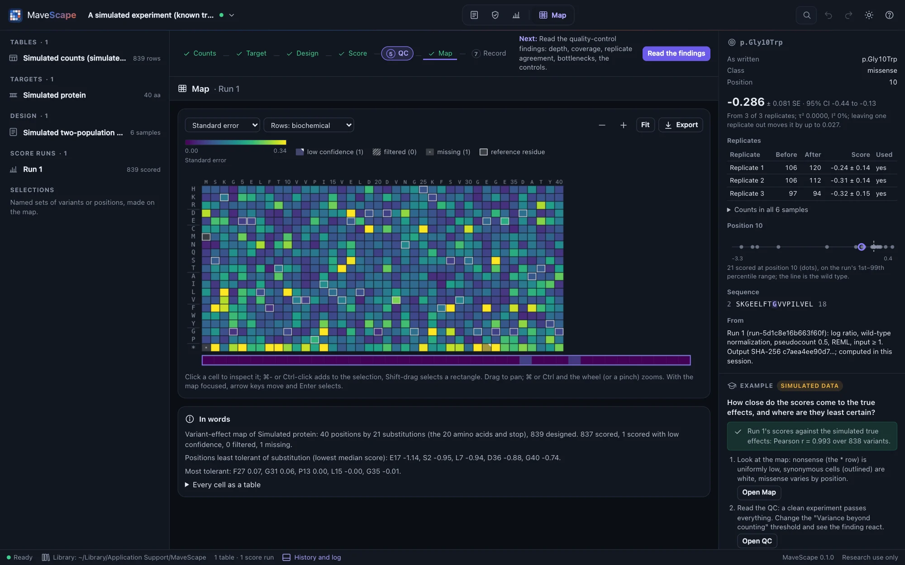
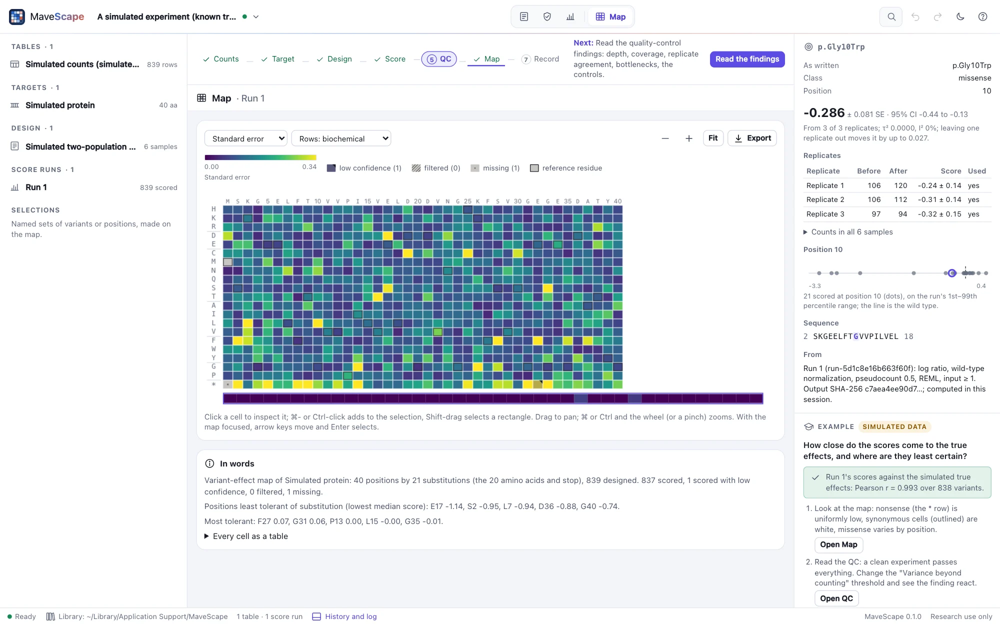

Examples
Two examples come with MaveScape: a published experiment and a simulated one whose true effects are known. Each opens scored, with its question, guided steps and what to expect in the inspector.
GRB2 SH3 domain (published)
An abundance selection of every substitution in the 56-residue SH3 domain of GRB2, in three replicates, from the Human Domainome (MaveDB urn:mavedb:00000835-a-1, CC0 1.0; Beltran et al., Nature 2025). The counts are MaveDB's file, unchanged.
The question: which positions does the domain need to fold and stay abundant, and how sure are the scores?


- Quality control passes everything except the variance beyond counting, about 11×: a bottleneck, which the Domainome's own error model found at the input.
- Nonsense variants score about −4.6 against the wild type's 0: the assay separates loss of function cleanly.
- The least tolerant positions are buried hydrophobic and glycine residues of the fold: A163, G196, G203 and I183 on GRB2's numbering.
A simulated experiment (known truth)
A two-population selection of a 40-residue protein in three replicates, simulated by MaveScape (seed 20261009) with every variant's true effect known. It is labeled simulated wherever it appears, and the true effects can be downloaded from its guide.
The question: how close do the scores come to the true effects, and where are they least certain?


- The scores track the true effects closely: the guide shows the correlation (r = 0.99) once the run is scored.
- The least certain scores are the variants with the fewest reads before selection.
- Quality control passes: the counts vary as counting predicts.
Blank layouts
The start page also has three annotated files to fill in with your own data: a count table, a sample sheet and a target FASTA. FORMATS.md describes them and every other file MaveScape reads and writes.